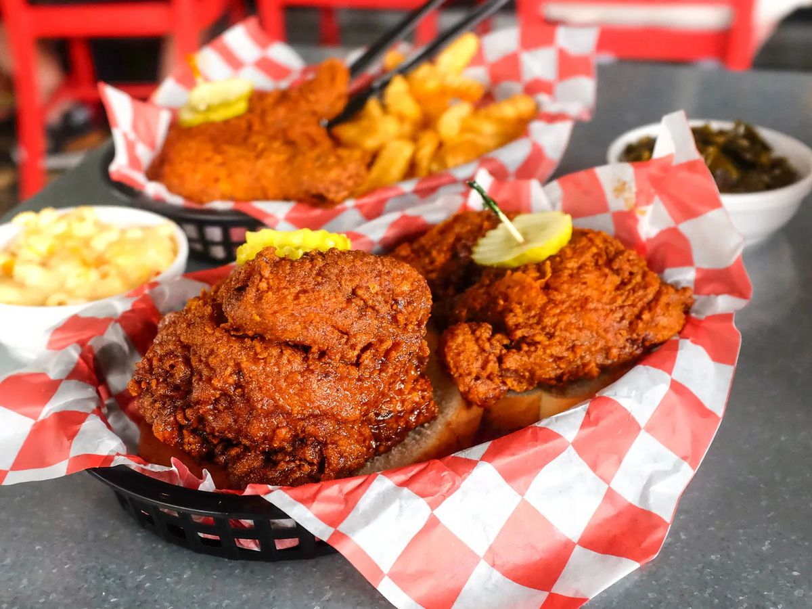

Homepage
Nashville Hot Chicken

Description
Nashville hot chicken is a tantalizing and fiery culinary creation
that hails from the vibrant city of Nashville, Tennessee. This
iconic dish features deep-fried chicken coated in a bold and blazing
blend of spices, typically dominated by cayenne pepper. The result
is a crispy, golden exterior that encapsulates an explosion of heat
and flavor with each mouthwatering bite. Traditionally served atop a
slice of soft, white bread and accompanied by dill pickles, this
spicy delight offers a perfect balance of fiery heat and savory
goodness. Its popularity has spread beyond Nashville's borders,
captivating food enthusiasts worldwide with its unique and addictive
taste, making it a true standout in the realm of American comfort
cuisine.
Ingredients
- Chicken: 1 whole chicken, cut into pieces or chicken parts of your choice
- Buttermilk: 1 cup
- Flour: 2 cups
- Cayenne Pepper: 2 tablespoons
- Paprika: 2 tablespoons
- Garlic Powder: 1 tablespoon
- Onion Powder: 1 tablespoon
- Black Pepper: 1 tablespoon
- Salt: 1 tablespoon
- Oil: For frying, enough to submerge the chicken pieces in the frying vessel
- Hot Sauce: 1/4 cup (adjust to your desired spiciness)
- Brown Sugar: 2 tablespoons
- Unsalted Butter: 1/4 cup
- White Bread: Sliced, as needed for serving
- Pickles: Sliced, for serving
Steps
- Marinate the Chicken: Place the chicken in a large bowl and
cover it with buttermilk. Ensure all the chicken is coated, then
cover the bowl with plastic wrap and let it marinate in the
refrigerator for at least 1 hour (overnight for even better
results).
- Prepare the Dredging Mixture: In a separate shallow dish, mix
the flour with a combination of cayenne pepper, paprika, garlic
powder, onion powder, black pepper, and salt. The exact amounts
of spices can be adjusted according to your preferred level of
spiciness.
- Dredge the Chicken: Take each chicken piece from the buttermilk,
allowing any excess to drip off, and dredge it in the seasoned
flour mixture. Make sure the chicken is evenly coated.
- Heat the Oil: In a large, deep skillet or Dutch oven, heat
vegetable oil or similar over medium-high heat until it reaches
350-375°F (175-190°C).
- Fry the Chicken: Carefully add the coated chicken pieces to the
hot oil, working in batches if necessary to avoid overcrowding
the pan. Fry the chicken until it is golden brown and cooked
through, which usually takes about 15-20 minutes depending on
the size of the pieces. Use a meat thermometer to ensure the
internal temperature of the chicken reaches 165°F (74°C).
- Make the Hot Sauce: While the chicken is frying, prepare the hot
sauce. In a small saucepan, melt butter and mix it with hot
sauce and brown sugar. Adjust the hot sauce and sugar amounts to
achieve the desired level of heat and sweetness.
- Coat the Chicken: Once the chicken is cooked, remove it from the
oil and let it drain on a wire rack or paper towels. While the
chicken is still hot, brush or drizzle the hot sauce mixture
over it, ensuring each piece is thoroughly coated.
- Serve: Place a slice of white bread on a plate, top it with the
hot chicken, and add a few dill pickle chips on the side. Enjoy
the crispy, spicy goodness!